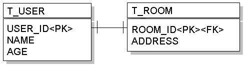
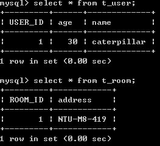

|
|
接續前一個主題 一對一（外鍵關聯），您可以讓T_USER與T_ROOM的主鍵共享來實作一對一對應，例如：  物件上若要完成這樣的對應資訊，則可以使用@PrimaryKeyJoinColumn標註，例如：
package onlyfun.caterpillar; Room類別無需作改變，若依 一對一（外鍵關聯）中的儲存範例，則會先儲存User，取得主鍵值之後，再儲存Room，讓User與Room的主鍵值相同，一個資料儲存後的表格狀態如下所示：  而查詢時，會使用LEFT OUTER JOIN的方式結合表格進行查詢，例如以下的陳述： User user = entityManager.find(User.class, new Long(1));
以Hibernate作為JPA的實作，會產生以下的SQL語句： Hibernate:
select user0_.USER_ID as USER1_0_1_, user0_.age as age0_1_, user0_.name as name0_1_, room1_.ROOM_ID as ROOM1_1_0_, room1_.address as address1_0_ from T_USER user0_ left outer join T_ROOM room1_ on user0_.USER_ID=room1_.ROOM_ID where user0_.USER_ID=? |